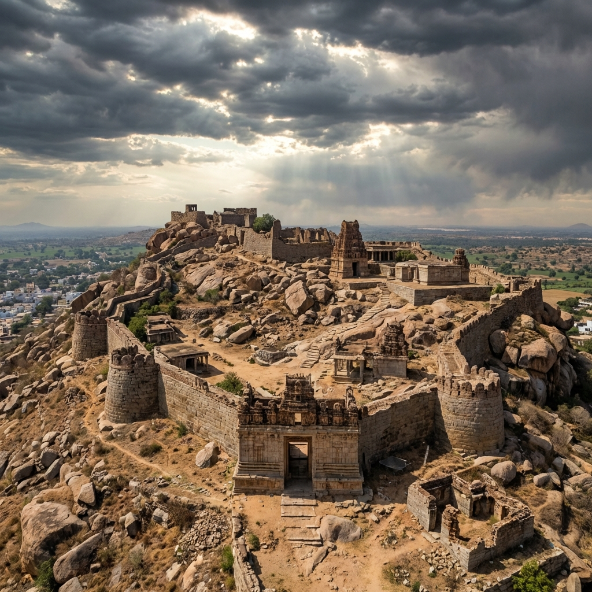
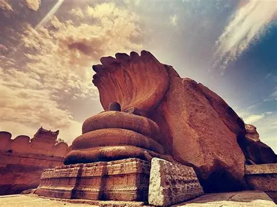
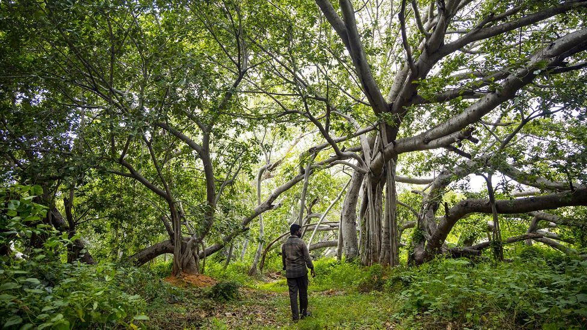

01 / HISTORY
Penukonda Fort
Explore a historic hill fort linked with the Vijayanagara era. Its old fortifications and elevated setting offer a glimpse into the region's strategic past.
PENUKONDA · ANANTAPUR DISTRICTRayalaseema · Andhra Pradesh
A district shaped by powerful history, remarkable architecture and wide-open landscapes.
Explore the region
From the hill fort at Penukonda to the sculptural beauty of Lepakshi and the immense canopy of Thimmamma Marrimanu, the Anantapur region rewards curious travellers.

Explore a historic hill fort linked with the Vijayanagara era. Its old fortifications and elevated setting offer a glimpse into the region's strategic past.
PENUKONDA · ANANTAPUR DISTRICT
Known for its Vijayanagara-era craftsmanship, detailed stone pillars, mural traditions and the celebrated hanging pillar.
LEPAKSHI · ANDHRA PRADESH
A remarkable banyan tree known for its enormous spread, creating a distinctive natural landmark and a quiet place to explore.
ANANTAPUR REGION · ANDHRA PRADESH